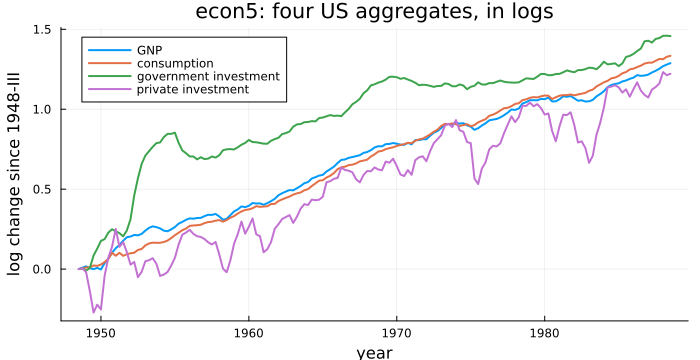
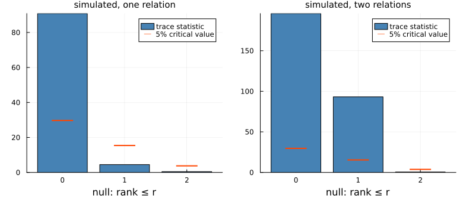
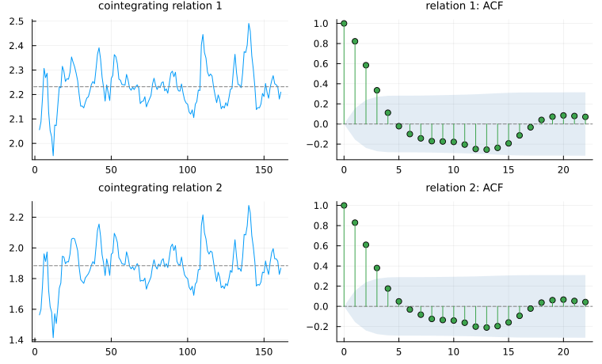
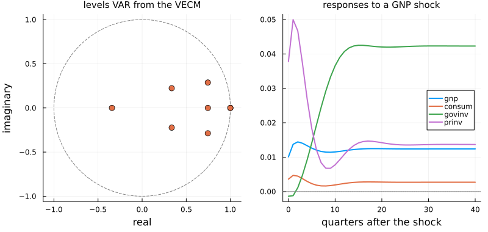
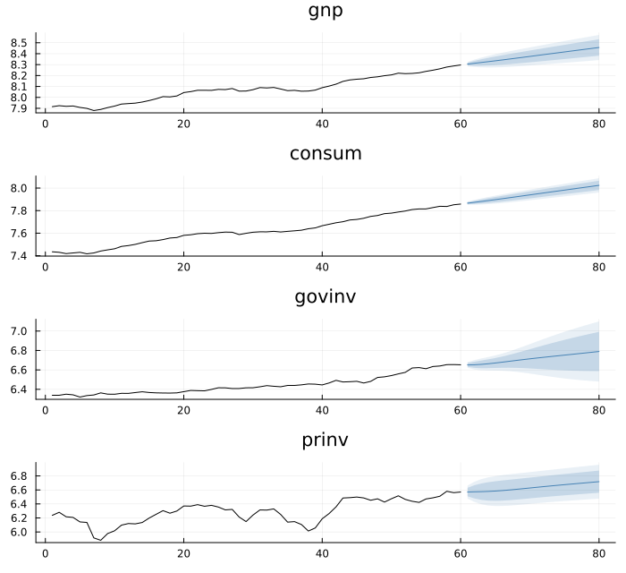
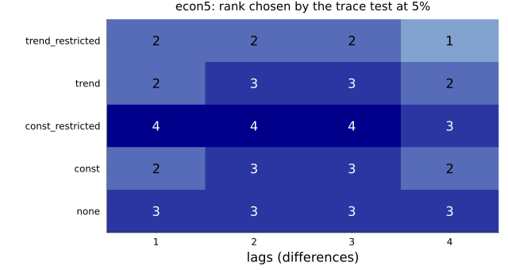
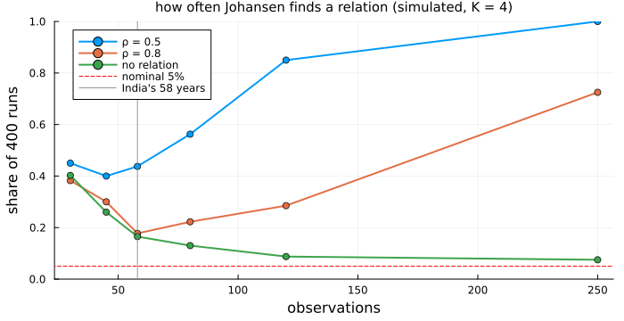

How Many Relations?
using TSAnalytics, Plots, Statistics, Random, DelimitedFiles
e = dataset("econ5")
tq = 1948.5 .+ (0:160) ./ 4
y = (gnp = log.(Float64.(e.gnp)), consum = log.(Float64.(e.consum)),
govinv = log.(Float64.(e.govinv)), prinv = log.(Float64.(e.prinv)))
Y = tsmatrix(y)
println(size(Y, 1), " quarters; rise over the sample, in log points: ", round.(Y[end, :] .- Y[1, :], digits=2))161 quarters; rise over the sample, in log points: [1.29, 1.33, 1.46, 1.22]plot(tq, Y .- Y[1:1, :]; label=["GNP" "consumption" "government investment" "private investment"],
linewidth=2, legend=:topleft, xlabel="year", ylabel="log change since 1948-III",
title="econ5: four US aggregates, in logs", size=(700, 360), left_margin=3Plots.mm)
Four of the five series in econ5, the quarterly US aggregates from Chapter 45, in logs and measured from where they started in 1948. All four grow, and none is stationary. GNP and consumption rise almost in step, by 1.29 and 1.33 log points; private investment swings around them, falling hard in each recession; government investment leaps in the Korean War years and ends highest, at 1.46. Chapter 49 asked of two series whether they were bound together. With four the question changes. They might share a single trend and be tied by three relations; they might be tied by one, or by none. How many?
The obvious attempt
Chapter 49's tools are at hand. Run Engle-Granger on all four, and since its first column is the dependent variable, run it four times, once with each series first; then try every pair.
nm = ["gnp", "consum", "govinv", "prinv"]
for k in 1:4
c = coint_test(Y[:, [k; setdiff(1:4, k)]])
println(rpad(nm[k], 7), " first: t = ", round(c.statistic, digits=2), " p = ", round(c.pvalue, digits=3))
end
for a in 1:3, b in a+1:4
println(rpad(nm[a] * " and " * nm[b], 18), " p = ", round(coint_test(Y[:, [a, b]]).pvalue, digits=3))
end
po = phillips_ouliaris_test(Y)
println("Phillips-Ouliaris Pz = ", round(po.statistic, digits=1), " 5% critical value ", critical_values(po).values[2])gnp first: t = -4.49 p = 0.016
consum first: t = -4.74 p = 0.007
govinv first: t = -2.85 p = 0.492
prinv first: t = -4.15 p = 0.044
gnp and consum p = 0.106
gnp and govinv p = 0.146
gnp and prinv p = 0.0
consum and govinv p = 0.462
consum and prinv p = 0.0
govinv and prinv p = 0.005
Phillips-Ouliaris Pz = 102.8 5% critical value 132.2207Three normalisations reject no cointegration at 5%; with government investment first, p = 0.492, nothing is found. Each run estimates at most one relation, and the four runs find different ones. The pairs are worse. GNP and private investment are tied (p rounds to 0), and so are consumption and private investment, which would tie GNP to consumption — yet that pair does not reject, at 0.106. Six tests, each with its own errors, do not add up to a count. And Phillips-Ouliaris, whose Pz Chapter 49 introduced because it does not depend on the order, does not reject at all: 102.8 against 132.22. None of these was built to answer how many.
The idea
Rewrite the levels VAR of Chapter 45 in differences, keeping one lagged level. Nothing is lost; it is the same model rearranged, the error-correction form:
\[\Delta y_t = \Pi\, y_{t-1} + \Gamma_1 \Delta y_{t-1} + \dots + \Gamma_k \Delta y_{t-k} + \mu + u_t .\]
Everything else in the equation is a change, and changes are stationary, so Π y_{t−1} must be stationary too; the rank of Π says how. Rank 0 is a VAR in differences, with no relation; full rank K would make the levels stationary. In between, at rank r,
\[\Pi = \alpha \beta', \qquad \alpha,\ \beta \in \mathbb{R}^{K \times r},\]
where the r columns of β are the cointegrating relations — β′y_{t−1} is how far the system stood from each equilibrium — and α holds the adjustment speeds, how much each series moves to close each gap. The other K − r directions are shared stochastic trends. Johansen (1988) showed how to estimate the rank.
Remove the lagged differences and the constant from both Δy_t and y_{t−1} by regression, and ask which combinations of the leftover levels best predict the leftover changes. The answer is an eigenvalue problem: its eigenvalues λ₁ ≥ … ≥ λ_K are squared canonical correlations, its eigenvectors candidate βs. A real relation has a clearly positive λ; the rest should be near zero. Maximum likelihood gives two likelihood-ratio tests,
\[\text{trace}(r) = -T \sum_{i=r+1}^{K} \log(1 - \lambda_i), \qquad \text{max-eig}(r) = -T \log(1 - \lambda_{r+1}),\]
the first of rank ≤ r against rank ≤ K, the second against rank = r + 1. They are used in sequence: test rank ≤ 0; if rejected, rank ≤ 1; and so on, stopping at the first that is not rejected. Neither is χ² under the null — the trends make them Dickey-Fuller-like — so critical values come from Osterwald-Lenum's (1992) simulated tables, by K − r and deterministic case. There is no p-value: MacKinnon, Haug and Michelis (1999) response surfaces would give one, and are not implemented here.
Making it work
Start where the answer is known. Two simulated fixtures, built like the pair Chapter 49 used, hold three series of 250 observations: r1 with one relation, r2 with two (one shared trend; relations d₁ + d₃ and d₂ + 2d₃). johansen_test requires lags, the number of lagged differences.
fx(name) = readdlm(joinpath(pkgdir(TSAnalytics), "test", "fixtures", "var", name), ','; skipstart=1)
r1, r2 = fx("coint3_r1.csv"), fx("coint3_r2.csv")
j1, j2 = johansen_test(r1; lags=1), johansen_test(r2; lags=1)
for (lab, j) in (("r1", j1), ("r2", j2))
println(lab, ": eigenvalues ", round.(j.eigenvalues, digits=3), " trace ", round.(j.trace, digits=1),
" rank ", coint_rank(j))
end
println("5% trace critical values, rank ≤ 0, 1, 2: ", j1.trace_crit[:, 2])r1: eigenvalues [0.294, 0.016, 0.002] trace [90.8, 4.5, 0.5] rank 1
r2: eigenvalues [0.339, 0.312, 0.002] trace [195.9, 93.2, 0.5] rank 2
5% trace critical values, rank ≤ 0, 1, 2: [29.68, 15.41, 3.76]bars(j, ttl) = scatter!(bar(j.ranks, j.trace; color=:steelblue, label="trace statistic", xticks=j.ranks,
xlabel="null: rank ≤ r", title=ttl, titlefontsize=10),
j.ranks, j.trace_crit[:, 2]; marker=:hline, ms=18, msw=3, color=:orangered, label="5% critical value")
plot(bars(j1, "simulated, one relation"), bars(j2, "simulated, two relations");
layout=(1, 2), size=(780, 340), bottom_margin=4Plots.mm, left_margin=3Plots.mm)
In r1 one eigenvalue stands clear, 0.294, and the rest are close to zero: the trace rejects rank ≤ 0 and not rank ≤ 1, so coint_rank stops at one. In r2 two stand clear and it stops at two. Both designs are recovered.
Now econ5. A levels VAR(p) has p − 1 lagged differences, so BIC's choice below, a VAR(2), means lags = 1.
println("var_select on the levels: ", var_select(Y; lag_max=8).selected)
j = johansen_test(y; lags=1)
println("rank by trace: ", coint_rank(j), " by maximum eigenvalue: ", coint_rank(j; statistic=:maxeig))var_select on the levels: (aic = 5, bic = 2, hqic = 5, fpe = 5)
rank by trace: 2 by maximum eigenvalue: 2jJohansen cointegration rank tests (null: rank <= r)
series (K) : 4 (gnp, consum, govinv, prinv)
differenced lags : 1
deterministic : unrestricted constant (Table 1)
T : 159
r trace 10% 5% 1% max-eig 10% 5% 1%
0 115.882 43.95 47.21 54.46 62.212 24.73 27.07 32.24
1 53.67 26.79 29.68 35.65 41.249 18.6 20.97 25.52
2 12.421 13.33 15.41 20.04 11.523 12.07 14.07 18.63
3 0.897 2.69 3.76 6.65 0.897 2.69 3.76 6.65
critical values: Osterwald-Lenum (1992); no p-value. rank (trace, 5%): 2Both statistics reject rank ≤ 0 and rank ≤ 1 by wide margins and stop at rank ≤ 2: the trace at 12.421 against 15.41, the maximum eigenvalue at 11.523 against 14.07. Two relations, so two shared trends — something Engle-Granger could never have said.
What are the relations? Any two independent combinations of the two columns of β describe the same equilibria, so β is identified only up to a normalisation, which the analyst chooses. normalize_beta with scheme = :identity gives each of the first two series a relation of its own:
B = normalize_beta(j, 2; scheme=:identity)
println("rows gnp, consum, govinv, prinv"); show(stdout, "text/plain", round.(B, digits=3)); println()rows gnp, consum, govinv, prinv
4×2 Matrix{Float64}:
1.0 -0.0
0.0 1.0
0.01 0.344
-0.936 -1.261Each column is a combination that stays put: log GNP less 0.936 of log private investment; log consumption less 1.261 of private investment plus 0.344 of government investment. That both lean on private investment is an artefact of the normalisation, not a finding; economic meaning for particular vectors needs restrictions from outside the data, the problem Chapter 51 meets for shocks. cointegration_plot shows whether they behave like equilibria:
plot(cointegration_plot(Y, j); size=(760, 460))
Both wander around a fixed level and come back, with the slowly decaying ACF of a persistent but stationary series.
Deterministic terms. The test used the default, deterministic = :const. There are five cases, each with its own critical values:
deterministic | the model | urca::ca.jo | statsmodels |
|---|---|---|---|
:none | no constant at all | — | det_order = -1 |
:const | unrestricted constant: the data drift | ecdet = "none" | det_order = 0 |
:const_restricted | constant only inside the relations: no drift | ecdet = "const" | — |
:trend | unrestricted constant and trend | — | — |
:trend_restricted | drift, and a trend inside the relations | ecdet = "trend" | — |
Two traps sit in the R column: ecdet = "none" still fits an unrestricted constant, so it is :const; and ca.jo's K counts the levels VAR's lags, so K = 2 is lags = 1 here.
The VECM. With the rank chosen, fit_vecm estimates α, β, Γ and the constant by maximum likelihood, β from the same eigenproblem as the test.
v = fit_vecm(y; lags=1, rank=2)
println("α, then α / standard error (columns: relation 1, relation 2)")
show(stdout, "text/plain", round.(v.alpha, digits=3)); println()
show(stdout, "text/plain", round.(v.alpha ./ v.stderr_alpha, digits=1)); println()
println("Γ₁[gnp, gnp] = ", round(v.gamma[1][1, 1], digits=5), " Π[gnp, gnp] = ", round((v.alpha * v.beta')[1, 1], digits=5))
for meth in (:ml, :twostep)
println("r1, ", rpad(meth, 7), " β = ", round.(vec(fit_vecm(r1; lags=1, rank=1, method=meth).beta), digits=4))
endα, then α / standard error (columns: relation 1, relation 2)
4×2 Matrix{Float64}:
-0.099 0.071
-0.047 0.041
0.629 -0.404
-0.276 0.321
4×2 Matrix{Float64}:
-1.8 2.0
-1.1 1.6
7.6 -7.7
-1.1 2.0
Γ₁[gnp, gnp] = 0.46652 Π[gnp, gnp] = -0.0986
r1, ml β = [1.0, -0.4965, -0.9777]
r1, twostep β = [1.0, -0.4931, -0.9655]The rows of α say who corrects a disequilibrium. GNP, consumption and private investment barely respond — their t-ratios lie between −1.8 and 2.0. The correction falls on government investment, with ratios of 7.6 and −7.7. The last two lines compare estimators on r1: Engle and Granger's two-step method, method = :twostep, gives (1, −0.4931, −0.9655) against maximum likelihood's (1, −0.4965, −0.9777) — consistent, but a different number, and available only for a single relation.
Forecasts and impulse responses use the VECM written back as a VAR in levels, var_rep. That VAR is unstable by construction, with exactly K − r unit roots, one per shared trend.
println(length(var_rep(v)), " levels coefficient matrices")
try lr_effects(v); catch err; println(sprint(showerror, err)); end
ri = irf(v, 40)
println("GNP shock, responses at h = 20: ", round.(ri.orth[21][:, 1], digits=4),
" at h = 40: ", round.(ri.orth[41][:, 1], digits=4))2 levels coefficient matrices
ArgumentError: lr_effects: a VECM's levels VAR has 2 unit root(s) by construction, so the cumulative response does not converge and the long-run effect does not exist. The responses converge to the permanent effect of a shock instead -- see irf(m, h; cumulative=false) at a long horizon.
GNP shock, responses at h = 20: [0.0125, 0.0028, 0.042, 0.0142] at h = 40: [0.0124, 0.0027, 0.0423, 0.0137]pr = plot(0:40, [M[i, 1] for M in ri.orth, i in 1:4]; label=permutedims(nm), linewidth=2,
xlabel="quarters after the shock", title="responses to a GNP shock", titlefontsize=10,
legend=:right)
hline!(pr, [0]; color=:grey, linestyle=:dot, label="")
plot(plot(roots_plot(v); title="levels VAR from the VECM", titlefontsize=10), pr; layout=(1, 2),
size=(800, 380), bottom_margin=4Plots.mm, left_margin=3Plots.mm)
Two of the eight roots sit exactly on the unit circle, put there by the rank; they coincide at 1, so the plot shows one point. lr_effects refuses, by name: the cumulative response of a system with unit roots never converges. The impulse responses show the same fact from the other side (orthogonalised with GNP ordered first, a choice Chapter 48 warned about): they do not die out, but barely move between twenty and forty quarters, settling at a permanent effect. A shock to the shared trends moves all four series for good, and moves them together.
plot(forecast(v, 20); history=Y[end-59:end, :], size=(700, 640))
The forecasts carry each series' drift forward, held in line by the two relations, and the bands never stop widening: the two shared trends are still random walks. Cointegration pins down combinations of the levels, not the levels themselves.
The complication
The rank is an output of choices. Repeat the test over four lag lengths and all five deterministic cases:
dets = [:none, :const, :const_restricted, :trend, :trend_restricted]
grid = [coint_rank(johansen_test(Y; lags=l, deterministic=d)) for d in dets, l in 1:4]
foreach(i -> println(rpad(dets[i], 17), " lags 1-4: ", grid[i, :]), 1:5)none lags 1-4: [3, 3, 3, 3]
const lags 1-4: [2, 3, 3, 2]
const_restricted lags 1-4: [4, 4, 4, 3]
trend lags 1-4: [2, 3, 3, 2]
trend_restricted lags 1-4: [2, 2, 2, 1]heatmap(1:4, 1:5, grid; yticks=(1:5, string.(dets)), xticks=1:4, xlabel="lags (differences)",
color=cgrad(:blues, 5, categorical=true), clims=(-0.5, 4.5), colorbar=false,
title="econ5: rank chosen by the trace test at 5%", titlefontsize=10,
size=(640, 340), left_margin=6Plots.mm, bottom_margin=3Plots.mm)
annotate!([(l, i, text(string(grid[i, l]), 11, grid[i, l] >= 3 ? :white : :black))
for i in 1:5, l in 1:4][:])
Under :const there are two relations at one and four lags — the choices of BIC and AIC — and three at two and three. The restricted constant finds four at most lags: stationary levels. That is no discovery. :const_restricted assumes the data do not drift, the first figure shows that they do, and the test is rejecting a misspecified model. Choose the case from what the series look like — drifting levels, untrending relations: :const — and report the rank with its lag length.
Short samples make all of this harder. India's annual data in global_economy, 58 points from 1960 to 2017, offer four candidates: imports and exports as shares of GDP, log GDP and log CPI.
g = dataset("global_economy")
ix = findall(==("India"), g.Country)
yi = (imports = Float64.(g.Imports[ix]), exports = Float64.(g.Exports[ix]),
lgdp = log.(Float64.(g.GDP[ix])), lcpi = log.(Float64.(g.CPI[ix])))
for l in (1, 2)
ji = johansen_test(yi; lags=l)
println("India, lags = ", l, ": trace ", round.(ji.trace, digits=1), " 5% ", ji.trace_crit[:, 2],
" rank ", coint_rank(ji))
endIndia, lags = 1: trace [38.8, 16.3, 6.7, 0.0] 5% [47.21, 29.68, 15.41, 3.76] rank 0
India, lags = 2: trace [28.7, 15.3, 5.8, 0.2] 5% [47.21, 29.68, 15.41, 3.76] rank 0Rank zero at both lag lengths: a trace of 38.8 against 47.21. To see what 58 points can detect, simulate four drifting series — three independent random walks and a fourth tied to them by an AR(1) error with coefficient ρ — and count how often the test finds at least one relation. At ρ = 1 the relation is gone, so that curve counts false discoveries.
function sim(rng, n, ρ) # drop a 50-step burn-in
w = cumsum(0.2 .+ randn(rng, n + 50, 3); dims=1)
s = zeros(n + 50); for t in 2:n+50; s[t] = ρ * s[t-1] + randn(rng); end
hcat(w[:, 1] .+ w[:, 2] .- w[:, 3] .+ s, w)[51:end, :]
end
rng, ns = MersenneTwister(50), [30, 45, 58, 80, 120, 250]
found = [mean(coint_rank(johansen_test(sim(rng, n, ρ); lags=1)) >= 1 for _ in 1:400)
for n in ns, ρ in (0.5, 0.8, 1.0)]
for (k, n) in enumerate(ns)
println("n = ", rpad(n, 4), " share finding a relation, ρ = 0.5, 0.8, 1 (none): ", round.(found[k, :], digits=3))
end
println("half-life of the equilibrium error at ρ = 0.8: ", round(log(0.5) / log(0.8), digits=1), " periods")n = 30 share finding a relation, ρ = 0.5, 0.8, 1 (none): [0.45, 0.382, 0.402]
n = 45 share finding a relation, ρ = 0.5, 0.8, 1 (none): [0.4, 0.3, 0.26]
n = 58 share finding a relation, ρ = 0.5, 0.8, 1 (none): [0.438, 0.178, 0.165]
n = 80 share finding a relation, ρ = 0.5, 0.8, 1 (none): [0.562, 0.222, 0.13]
n = 120 share finding a relation, ρ = 0.5, 0.8, 1 (none): [0.85, 0.285, 0.088]
n = 250 share finding a relation, ρ = 0.5, 0.8, 1 (none): [1.0, 0.725, 0.075]
half-life of the equilibrium error at ρ = 0.8: 3.1 periodsplot(ns, found; marker=:circle, linewidth=2, label=["ρ = 0.5" "ρ = 0.8" "no relation"],
xlabel="observations", ylabel="share of 400 runs", ylims=(0, 1), legend=:topleft,
title="how often Johansen finds a relation (simulated, K = 4)", titlefontsize=10, size=(700, 360),
left_margin=3Plots.mm, bottom_margin=3Plots.mm)
hline!([0.05]; color=:red, linestyle=:dash, label="nominal 5%")
vline!([58]; color=:grey, linestyle=:dot, label="India's 58 years")
At 58 observations a relation whose error has ρ = 0.8 — a half-life of about three periods — is found in 0.178 of runs; a relation that does not exist is "found" in 0.165. The test cannot tell them apart. Even a fast-correcting relation, ρ = 0.5, is found in only 0.438. And the false-discovery rate is itself far from 5% in short samples — 0.402 at 30 observations, 0.075 even at 250 — because the critical values are asymptotic. On India's 58 years, rank zero means the data are silent, not that the series are unrelated.
Run on the four econ5 logs against urca 1.3.4 and vars 1.6.1 in R 4.6.0, and statsmodels 0.14.1 and 0.15.0.
Same statistic, different rank. The trace statistics agree to every printed digit (115.8823, 53.6699, 12.4207, 0.8973 at lags = 1). At lags = 2 (ca.jo(…, K = 3)) the test of rank ≤ 2 is 16.9491 in all three, against a 5% critical value of 15.41 here and 15.4943 in statsmodels — rank three — but 17.95 in urca: rank two. For ecdet = "none", urca reads Osterwald-Lenum's Table 1.1*, meant for data without drift; this package reads Table 1, the case the model fits, and statsmodels' own simulated values match it. More in Cointegration and VECM.
Same model, different Γ. cajorls, statsmodels' VECM (deterministic = "co") and fit_vecm agree on α and β, and statsmodels on Γ and the log-likelihood (to 1e-11). cajorls reports 0.36793, not 0.46652, on lagged ΔGNP in the GNP equation: its default spec = "longrun" puts the levels term at lag K, so its Γ is Γ + Π, here 0.46652 − 0.0986 = 0.36792. With spec = "transitory" it reports 0.46652.
Where this leaves you
You can count cointegrating relations with Johansen's trace and maximum-eigenvalue tests, choose the deterministic case from the data, read β knowing it is fixed only up to normalisation, and fit the VECM: α for who adjusts, forecasts whose bands keep widening, impulse responses that settle at permanent effects. You have also seen the rank move with the lag length and the table, and vanish on 58 annual points.
What you cannot yet do is give the shocks names. The impulse responses here rest on a Cholesky ordering chosen for convenience, and the relations on a normalisation chosen the same way. Whether a shock is "demand" or "policy", and which effects are permanent by economic argument rather than by arithmetic, needs restrictions stated as assumptions; Chapter 51 sets them out.
See also
- Chapter 45 —
econ5, and why its levels VAR had a root above one - Chapter 48 — impulse responses and the ordering problem
- Chapter 49 — Engle-Granger and Phillips-Ouliaris for a single relation
- Cointegration and VECM — every argument, and the critical-value tables
- Coming from R or Python —
ca.jo,cajorlsandcoint_johansenmapped - API:
johansen_test,JohansenTest,coint_rank,normalize_beta,critical_values,fit_vecm,VECMModel,var_rep,cointegration_plot,roots_plot,lr_effects